エンティティ配置モード
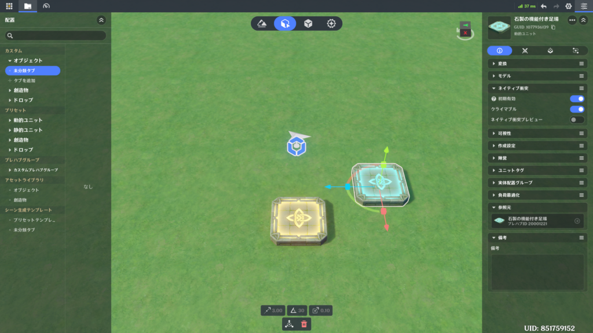
⭐1.機能概要
ステージ内で必要なエンティティ（オブジェクト）を作成・配置し、そのデータを編集する機能です。地形編集と同じシーンを共有しています。
⭐2.開き方
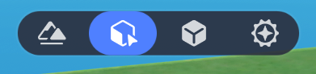
⭐3.配置の手順
🌸1.アセット欄からオブジェクトを作成
アセット欄からオブジェクトを左クリックしたままドラッグし、離すとエディタ内に配置されます。また、アセット欄のオブジェクトを左クリックするだけで画面の中央に作成されます。
動的ユニット
「プリセット」タブ内の「動的ユニット」タブでは、動的エンティティを作成できます。
動的エンティティにはコンポーネントやノードグラフを追加できますが、負荷が高くなる傾向にあります。
主にゲームプレイに関わるオブジェクトに使用されます。
静的ユニット
「プリセット」タブ内の「静的ユニット」タブでは、静的エンティティを作成できます。
静的エンティティには、コンポーネントやノードグラフを追加することができません。
動作が軽く、主に背景などの景観に使用されます。
カスタムタブ
「カスタム」タブでは、選択したカスタムプレハブの種類によって、オブジェクトが動的になるか静的になるかが決まります。
補足
動的エンティティはGUIDを持ち、ノードグラフによる制御が可能です。
静的エンティティはGUIDを持ちません。
🌸2.基本操作
(1) 単一選択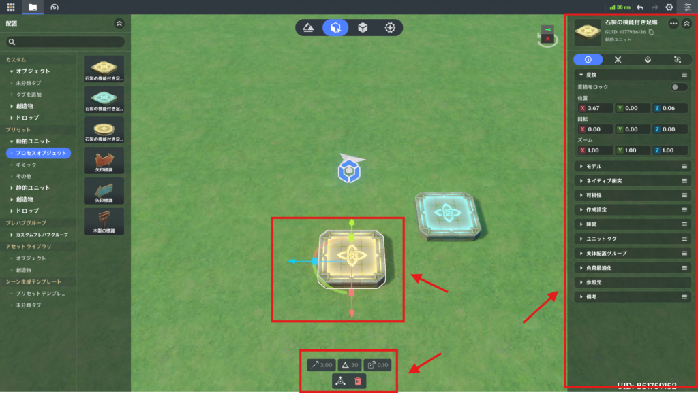
左クリックでオブジェクトを選択します。
選択されたエンティティはアウトラインでハイライト表示され、変形・操作ツールとツールバーが表示されます。
また、右側の詳細画面が開きます。
(2) 複数選択
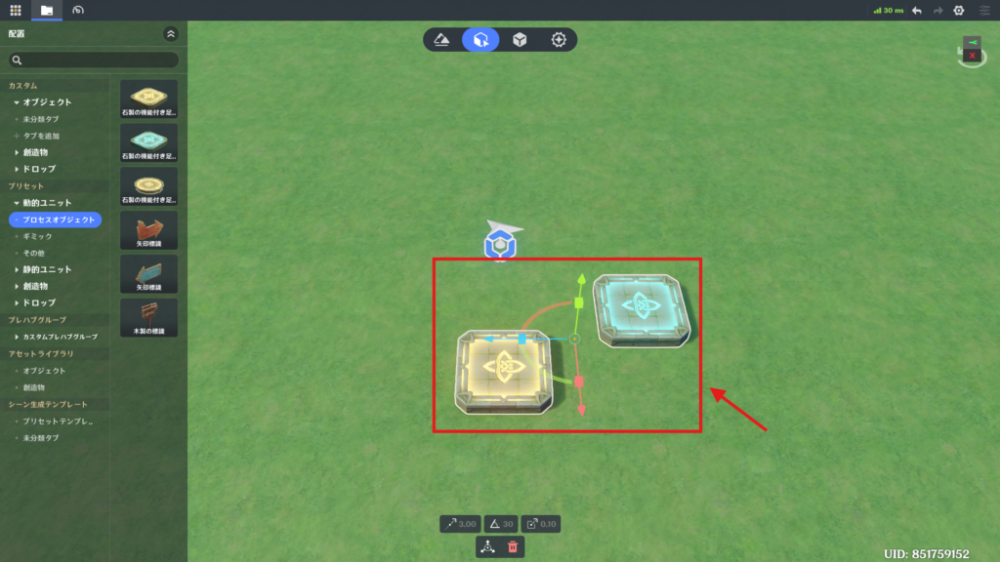
マウスの左ボタンを押したままドラッグすると、範囲選択できます。
Shiftキーを押しながら左クリックすると、選択範囲の追加または削除ができます。
選択されているすべてのエンティティの中央に変形・操作ツールが表示されます。
※一部のエンティティは同時に選択できません。
(3) 選択のキャンセル
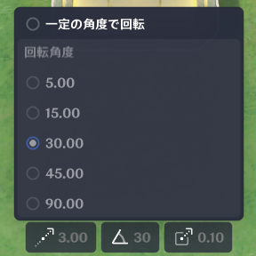
何もないエリアをクリックすると、選択が解除されます。
(4) 移動、回転、ズーム
変形・操作ツールを使用して、エンティティの移動、回転、ズームを行います。
Spaceキーを押すとツールタイプをオールインワン⇒移動⇒回転⇒ズームの順番で切り替えられます。
オールインワン
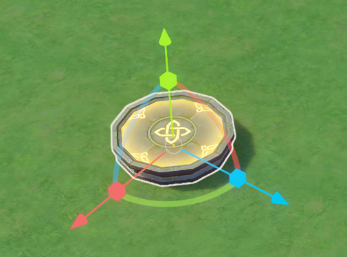
移動、回転、ズームの一部の機能を提供し、相対座標変換のみをサポートします。
移動
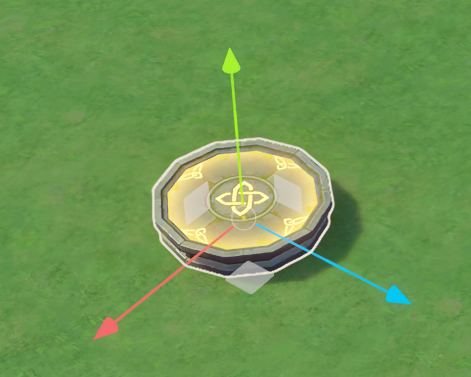
オブジェクトの位置を変更します。
ワールド座標とローカル座標の両方に対応しています。
回転
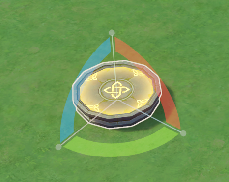
オブジェクトの向きを変更します。
ワールド座標とローカル座標の両方に対応しています。
ズーム
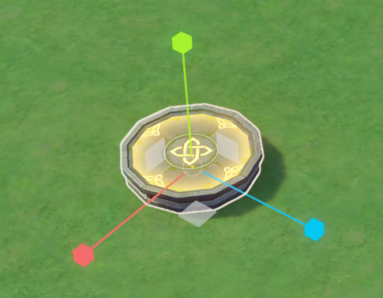
オブジェクトの大きさを変更できます。
ローカル座標のみ対応しています。
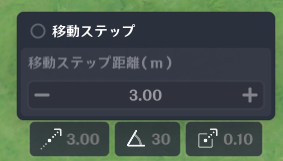
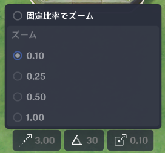
各ツールで変化量を設定することで、より精密な操作ができます。
ゴミ箱アイコン または Deleteキーを押すことで、選択中のエンティティを削除できます。
(6) エンティティのコピー＆ペースト
右クリックメニューからコピー⇒ペーストするか または Ctrlキー＋Cキー⇒Ctrlキー＋Vキーでコピー＆ペーストができます。
複製されたエンティティは、エディタ画面内のカーソル位置に配置されます。
Altキーを押しながら変形・操作ツールの軸をクリックするとその場で複製することができます。
この場合は、元のオブジェクトと同じ位置に作成されます。
1回のアクションで作成されるコピー数は、クイック設定(右上の歯車アイコン)から設定することができます。
(7) エンティティデータのコピー＆ペースト
選択したオブジェクトを右クリックして、「エンティティのデータをコピー」⇒「エンティティのデータをペースト」で実行します。
エンティティのデータをペーストすると、選択中のエンティティの情報が上書きされ、プレハブの参照先が更新されます。
エンティティのGUIDは変更されません。
オブジェクトと創造物の間で、エンティティデータのコピー＆ペーストはできません。
(8) 元に戻す・復元
右上の左矢印アイコンをクリックするか Ctrlキー＋Zキーで直前のアクションを取り消すことができます。
右矢印アイコンをクリックするか Ctrlキー＋Yキーで取り消したアクションを復元することができます。
※一部の操作では利用できない場合があります。
(9) クイックセーブ
システムメニューから「クイック保存」を行うか Ctrlキー＋Sキーで現在のプロジェクトのすべてのデータを保存します。
こまめにセーブするようにしてください。
※一部の操作では利用できない場合があります。
🌸3.詳細編集
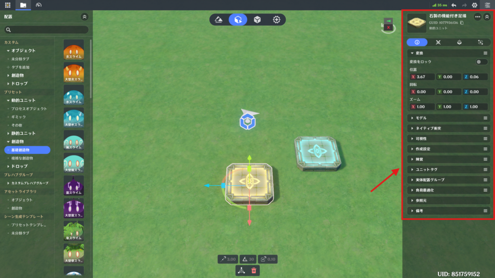
一番左の「基本属性」タブから編集することができます。
変換・操作
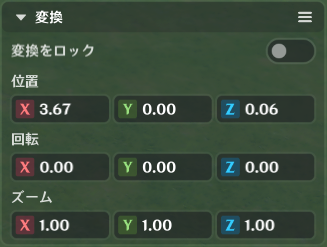
位置、回転、ズームを微調整できます。
「変換をロック」を有効にすると、変形・操作ツールで変更できなくなり、誤った編集を防ぐことができます。
モデル
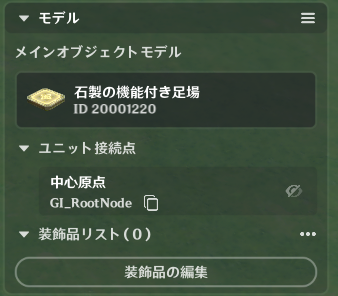
メインオブジェクトのモデル変更(※空のオブジェクトのみ)、ユニット接続点の表示、装飾品の編集を行うことができます。
ネイティブ衝突
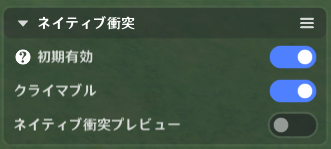
初期有効：これをオンにすると、オブジェクトの衝突が有効になります。（通り抜けしなくなる）
クライマブル：これをオンにすると、そのエンティティを登れるようになります。
可視性
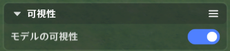
モデルの表示設定は、そのモデルの外見上の表示のみに影響し、エンティティのその他のロジックには影響しません。
作成設定
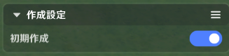
初期作成を無効にすると、ステージ開始時にエンティティは作成されません。
ノードグラフを使用するとこで、動的に作成できるようになります。
陣営
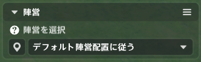
エンティティの所属陣営を設定できます。
ユニットタグ
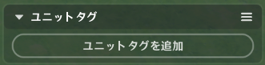
タグの追加や、ノードグラフ内からタグ付けされたエンティティの検索が可能です。
実体配置グループ
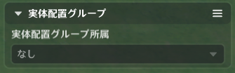
オブジェクトの「実体配置グループ」を管理します。
負荷最適化
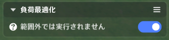
オブジェクトがキャラクターから離れている場合、プレイヤーのローカル環境で動作させるかを制御します。
効果音
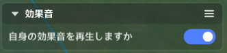
エンティティ固有の効果音を再生するかどうかを設定します。（創造物の鳴き声など）
参照元
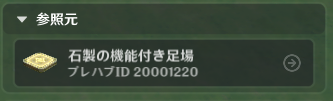
エンティティが参照しているプレハブを確認できます。
備考
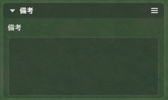
テキストメモを入力できます。
🌸4.クイック配置設定
歯車アイコンから設定できます。
⭐4.エンティティ、プレハブの上書き
🌸1.エンティティとプレハブ
アセット欄からドラッグしたオブジェクトは、「エンティティ」となります。関連付けられているプレハブは、詳細画面の基本属性の参照元から確認することができます。
エンティティのデータはプレハブを参照しており、エンティティ上で行った編集は、参照元データを上書きします。
プレハブを削除すると、そのプレハブから生成されたすべてのエンティティが削除されます。
🌸2.エンティティにおけるプレハブデータの上書き
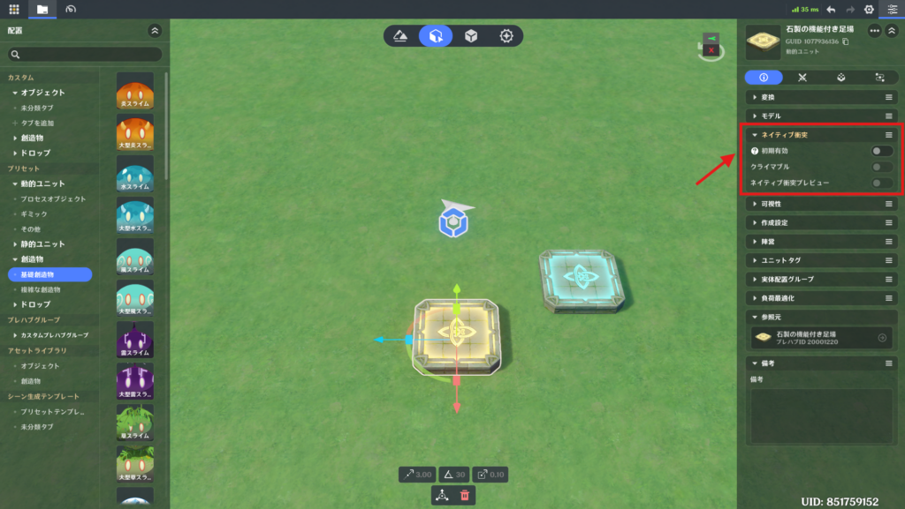
上書きされていない項目は、プレハブ側での更新内容が適用されます。（プレハブライブラリ側で上書き保存をする必要があります）
上書きした項目には、プレハブからの更新は反映されません。（これらの項目は詳細画面上でオレンジ色にハイライトされます）
🌸3.プレハブの修正
プレハブは、「プレハブライブラリ」から直接編集できます。「エンティティ配置」に存在するエンティティについては、右クリックメニューの「プレハブを上書き保存」をクリックすることで、変更したデータを元のプレハブに反映させることができます。
「プレハブとして保存」をクリックすると、新しいプレハブとして作成されます。
🌸4.エンティティをプレハブのデータに復元する
(1) すべて復元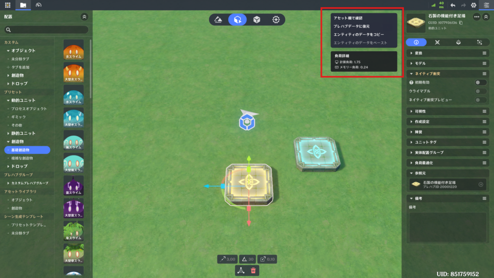
オブジェクトのアイコンをクリックすると詳細メニューが開きます。
そこで、「プレハブデータに復元」をクリックすると位置と回転を除くすべてのエンティティデータがプレハブの設定に合わせてリセットされます。
(2) 部分的に復元
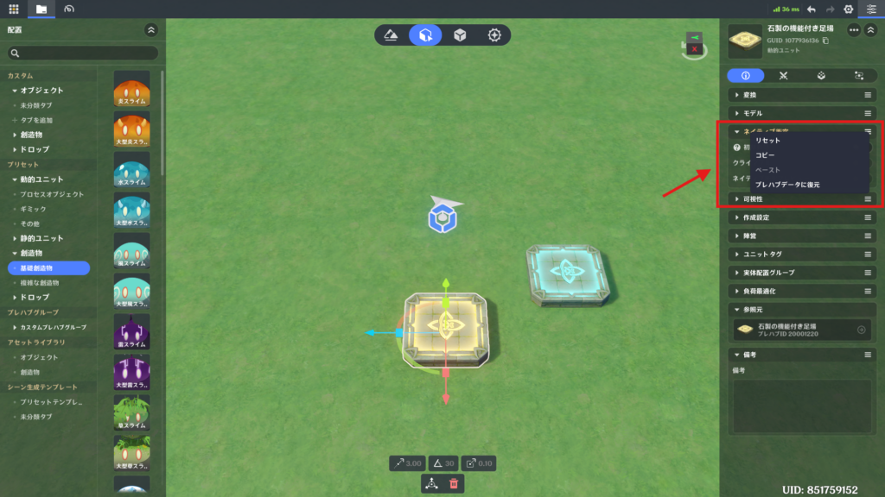
各項目の横三本線のアイコンをクリックすると詳細メニューが開きます。
そこで、「プレハブデータに復元」をクリックするとその項目がプレハブの設定に合わせてリセットされます。